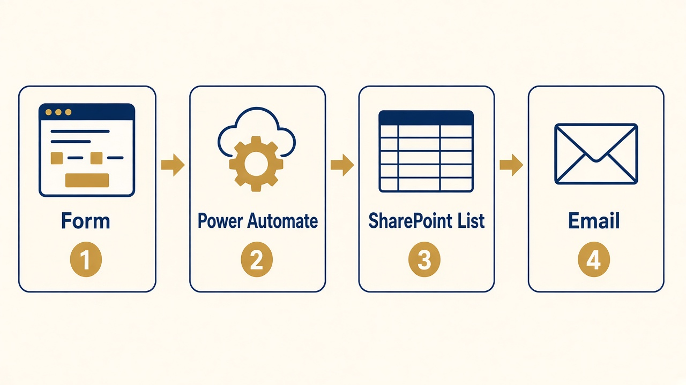
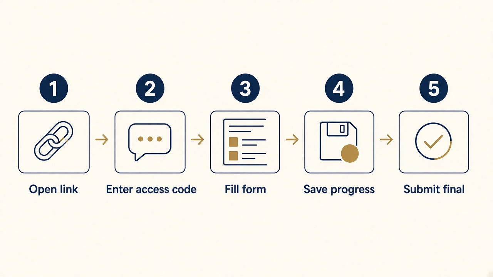
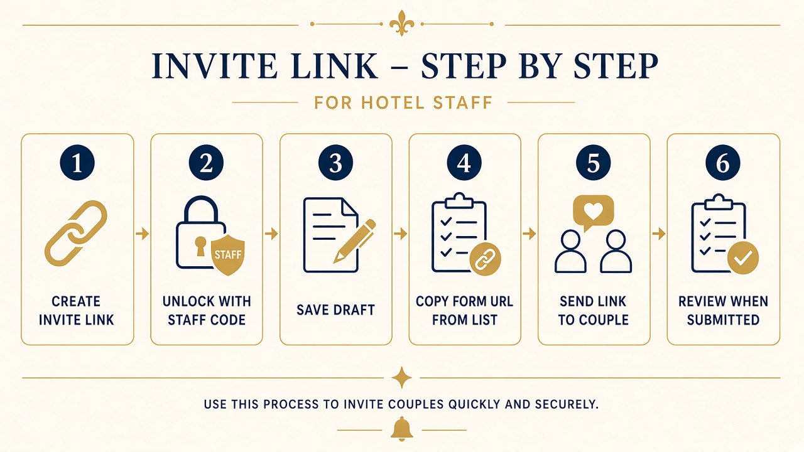
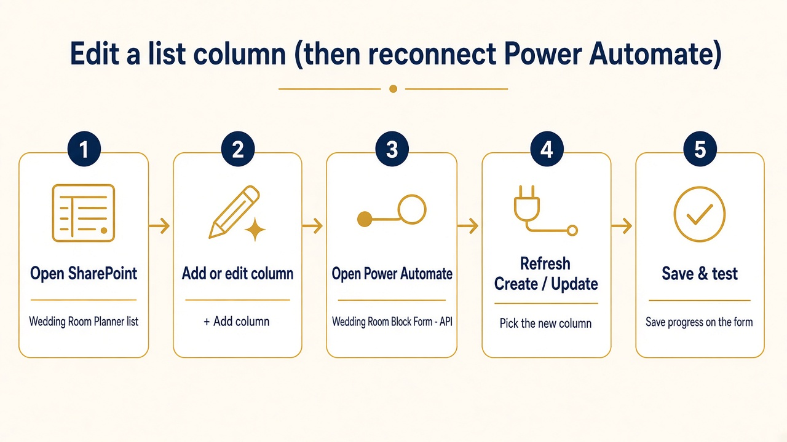

A simple guide to what this system does, how couples and staff use it,
and how to change basic settings.
Live form: https://TheLasalleChicago-hydai.github.io/wedding-room-block-form/
Version for hotel use · Print this file for page numbers and offline reading
1. What this system is
This is an online form that collects wedding room-block details for The LaSalle Chicago.
It replaces chasing answers by email or paper. Couples fill out the form. Staff can start or review a draft. When the couple submits, the hotel gets an email with a PDF summary.
What it does (in plain English)
Locks the form behind an access code
Lets people save progress and come back later
Stores answers in a Microsoft list (SharePoint)
Emails the couple a resume link when they save
Emails the hotel a PDF when they submit final
Lets staff unlock with a staff code to edit without spamming emails
You do not need to run a server
The form lives on GitHub Pages. Saving and emailing are handled by Microsoft Power Automate and SharePoint.
2. The big picture
Four pieces work together:

Figure 1. Form → Power Automate → SharePoint list + email.
Piece
What it is
Who touches it
Form
The web page couples and staff fill out
Everyone using a browser
Power Automate
The “robot” that checks the password, saves data, sends email, builds PDF
IT / coordinator who maintains the flow
SharePoint list
The spreadsheet-like list of every wedding draft/submission
Hotel staff
Email / OneDrive
Resume links to couples; PDF alerts to staff; file copies of drafts/submits
Outlook / OneDrive
Happy path (guest)
Unlock→Fill form→Save→Resume email→Submit→Staff PDF email
3. How couples use the form
Give the couple: (1) the form link, and (2) the guest access code.

Figure 2. Couple steps from open to submit.
Open the link in Chrome, Edge, or Safari.
Enter the access code from the hotel, then unlock.
Fill in contact details (name, wedding date, email). Email is needed so they can get a resume link.
Click Save progress anytime. They get an email with a link to continue later. Nothing is final yet.
Click Submit final when everything is complete. They should see a thank-you screen. The hotel gets the PDF alert.
What guests must fill before Save
Couple/party name, wedding date, and email.
What guests must fill before Submit
The full form. If they answer No to valet, bags, brunch, or getting-ready room, they can skip those detail boxes. Ceremony time, reception time, and group arrival/departure are always required on submit.
Within 30 days of the wedding
A red banner warns that late requests may not be assured. Complete-by still defaults to 30 days before the wedding date.
4. How staff use the form
Staff use a different password (staff code). After unlock you should see a gold banner: Staff mode.

Figure 3. Typical staff workflow.
Recommended: staff starts the draft
Open the live form (optionally with dates already in the URL — see Links).
Unlock with the staff code.
Enter at least couple name and wedding date.
Click Save progress. No customer email is sent for staff saves.
Copy the link from the browser address bar, or open the SharePoint list and copy Form URL.
Send that link + the guest access code to the couple.
Open a draft while the couple is still working
Open the Wedding Room Planner list in SharePoint.
Find the couple. Click Form URL (or paste ?draft=… onto the form link).
Unlock with the staff code.
Edit and Save. List updates; couple is not emailed again from a staff save.
After the couple submits
Staff get an Outlook email with a PDF summary.
List status becomes submitted.
Staff can reopen the form, edit, and submit again to refresh the PDF without another email (staff path).
Staff-only section on the form
“Important dates at a glance” is hidden from couples. Those dates auto-fill from the wedding / complete-by date (cutoff & menu = complete-by; vendor list = wedding − 14 days; gift bag = day before wedding).
Edit the HTML inside Compose actions SubmitHTML / DraftHTML (and staff copies). A starter template is in:
power-automate/FORM-PDF-HTML.md
Put the Response 200 step right after Create/Update, before PDF convert/email, so the form does not time out.
F. Full technical setup (first-time / rebuild)
Follow SETUP-ORDERED.md in order. Do not skip phases.
9. Edit a SharePoint column & reconnect Power Automate
The list stores answers. Power Automate is the bridge that writes into that list.
If you change a column in the list, you must also tell the flow about it — or Save will fail or leave the cell blank.

Figure 4. Always: List first → then Power Automate → then test the form.
Why two places?
Place
What it does
Example
SharePoint list Wedding Room Planner
Holds the columns (like spreadsheet headers) and the rows of wedding data
Add a column “Guest Rooms”
Power Automate flow Wedding Room Block Form - API
When someone Saves or Submits, writes each form answer into the matching list column
Map “guests” → Guest Rooms
Golden rule
Changing only the list is not enough. Changing only the flow is not enough. Do both, then test Save on the form.
Step A — Open the list
Sign in to Microsoft 365 with your hotel account (same one that owns the list).
Go to SharePoint (or Microsoft Lists).
Open the list named Wedding Room Planner.
You should see one row per wedding (draft or submitted), with columns like Couple Name, Draft ID, Form URL, Status.
Step B — Add or edit a column
At the far right of the column headers, click + Add column (or open an existing column’s menu → Column settings → Edit).
Choose the type carefully:
Single line of text — names, times as text, Form URL
Multiple lines of text — long notes, FormPayload
Number — guests, vehicles, attendance
Date and time — wedding date, arrival (prefer Date only when possible)
Choice — yes/no or valet payment options (use the exact choice values the form sends)
Give it a clear name (example: Guest Rooms). Click Save.
Optional: drag the column where you want it in the list view.
Rename tip
Renaming a column in SharePoint usually keeps the link in Power Automate, but always open Create/Update afterward and confirm the field still shows. If it vanished, re-map it.
Click My flows (or Solutions if your team keeps it there).
Open Wedding Room Block Form - API.
Click Edit.
Step D — Link the new column in Create item & Update item
The flow has SharePoint steps that write the list. You must update every Create and Update that should fill this column (usually Save draft and Submit final — both Create and Update branches).
Find a Create item step for Wedding Room Planner. Click it.
If your new column is missing from the form, click Show all / refresh the fields (or delete and re-add the Create item action so SharePoint reloads the column list).
Find your new column. Click in the value box → open the dynamic content / expression picker.
Map it to the matching form field (examples from the field map):
Guests → guests
Email → email
Wedding Date → wedding_date
Repeat for the matching Update item step(s).
Repeat for Submit-path Create/Update if those are separate actions.
Click Save on the flow. Leave the flow On.
Dates & numbers that can be blank
For optional date/number columns, do not leave a blank text value. Use an expression that sends null when empty, or SharePoint rejects the save. Example idea: if empty → null, else → the date. See FIELD-MAP.md.
Choice columns
Do not wrap yes/no choice values with int(...). Choices are text (for example yes / no).
Step E — Test
Open the live form → unlock with the staff code.
Fill the related fields → click Save progress.
Open the SharePoint list → open that couple’s row → confirm the new column has the value.
If blank or Save errors: Power Automate → Run history → open the failed/latest run → expand the Create/Update step and read the red error.
Mini flow (remember this)
Open list→Add/edit column→Edit flow→Map Create + Update→Save flow→Test form Save
Common “I only wanted to…” jobs
Goal
List
Power Automate
Add a new data column
Add column
Map it on every Create + Update
Rename a column label
Edit column name
Open Create/Update and confirm field still mapped
Stop collecting a field
Optional: hide column from view (don’t delete yet)
Clear the mapping; keep Response 200 where it is
Fix Form URL resume link
Column Form URL exists
Set Form URL expression on Create + Update (see FIELD-MAP)
Change password / email To
(none)
Compose FormPassword / StaffPassword, or Submit email To
10. If something goes wrong (Power Automate)
Start here when Save/Submit fails, the list stays empty, or the form says “upstream server.”
How to check a run (do this first)
Open Power Automate → flow Wedding Room Block Form - API.
Click Run history (28-day list of attempts).
Open the newest run (or match the time you clicked Save).
Green check = that step worked. Red X = that step failed (read the error text). Grey / “Skipped” = that branch did not run.
Expand Create item / Update item and any Response (200) steps.
Important
A run can look mostly green while the form still errors — often because the Response 200 step was Skipped or ran too late (after PDF/email).
Simple decision guide
Form error?→Open Run history→Find red / skipped step→Fix that step→Save flow → retry form
Symptom → what to do
What you see
Likely cause
What to try
Form: “Upstream server” / timeout, but flow is green
HTTP Response ran too late or was Skipped
Move Response 200 to right after SharePoint Create/Update (before PDF convert / email). Place it after ItemLength so both Create and Update paths reply.
First Save works; later Saves fail the same way
Response only under Create, not Update
Guest/Staff 200 steps must sit outside the Create-only branch — after ItemLength.
Cannot unlock form
Wrong code, flow Off, or wrong API URL
Confirm flow is On. Check guest vs staff code. Confirm config.js API_URL matches this flow’s HTTP URL.
Create/Update fails mentioning a date column
Empty date sent as ""
Use null-if-empty expression on that date field (see Section 9).
Error with int(...) on a yes/no field
Choice treated as a number
Remove int(); map the choice as text.
New list column always blank
Column added in SharePoint but not mapped in the flow
Replace with the form-style template in FORM-PDF-HTML.md.
Staff does not see “Important dates”
Unlocked with guest code
Unlock with the staff code.
Couple got no resume email
Staff save (silent on purpose), or email step failed
Staff Saves do not email. Guest Saves should. Check Run history → Send email step.
Flow shows Failed on SharePoint
Column type mismatch or missing required field
Read the red error. Fix type (text vs number vs choice) or mapping. Re-test.
Where Response 200 should sit (sketch)
Create or Update item→Response 200 (form OK)→HTML / PDF / email (can be slower)
The form only needs the early “OK” reply. PDF and email can finish afterward.
Still stuck?
Screenshot the failed step’s error message in Run history and send it to whoever maintains the flow. That one screenshot usually beats a long description.